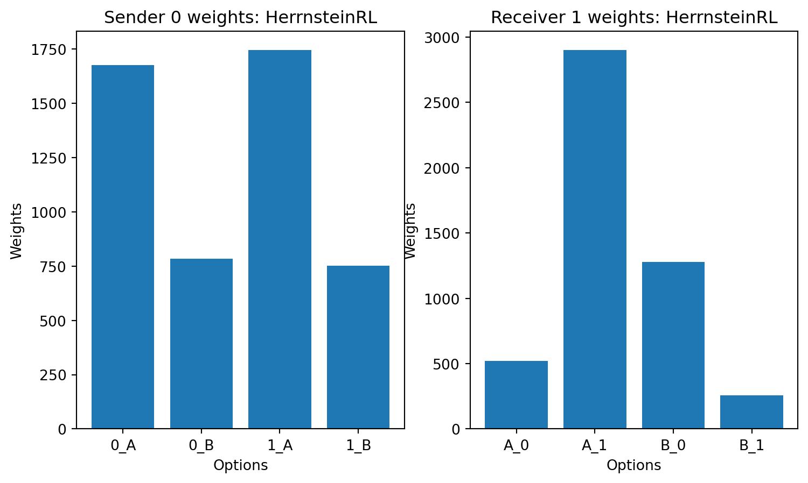
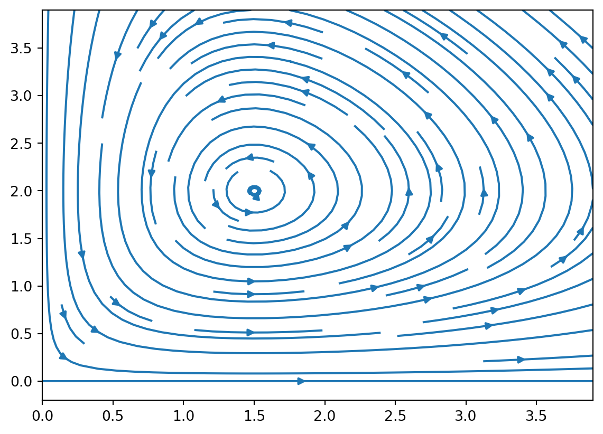
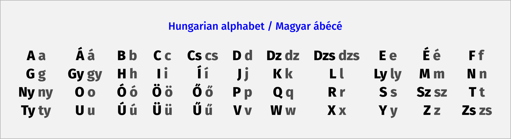
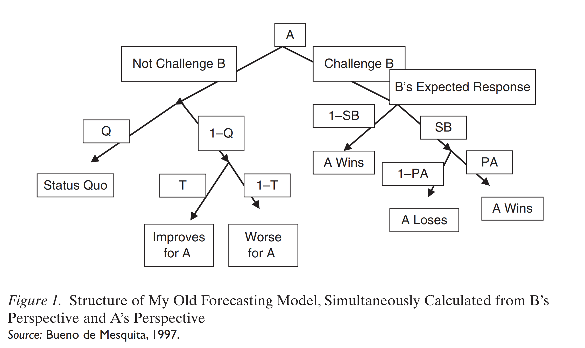
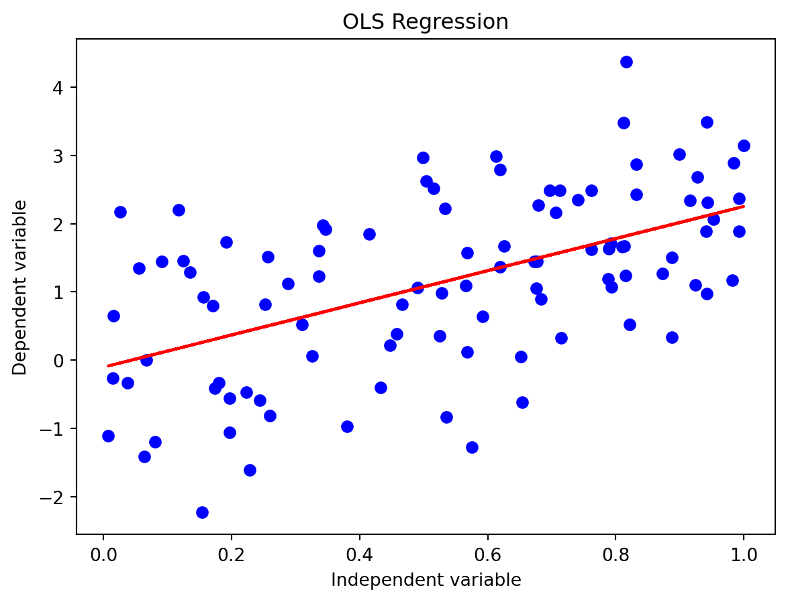

Monday, June 24, 2024
mindmap root((RL)) Main Concepts [MDP] Continuing Tasks Episodic Tasks Markov Property [Reward] [Action…
import gradio as gr import torch from transformers import AutoModelForCausalLM, AutoTokenizer, StoppingCriteria, StoppingCriteriaList, TextIteratorStreamer from threading im…

import semantic_kernel as sk from semantic_kernel.connectors.ai.open_ai import AzureChatCompletion, OpenAIChatCompletion import semantic_kernel.ai.open_ai as sk_oai kernel =…



MetropolisHastings

cost
sales
shelf price
echo "you won "{two,three,four}"…